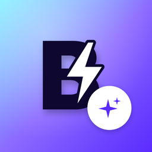
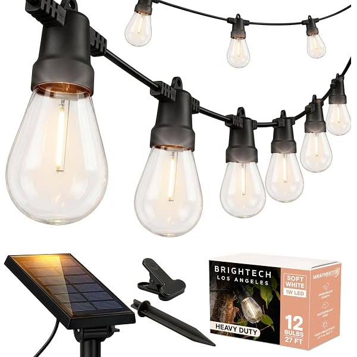
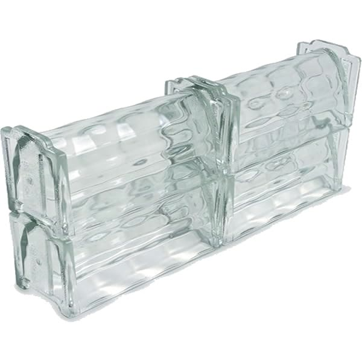
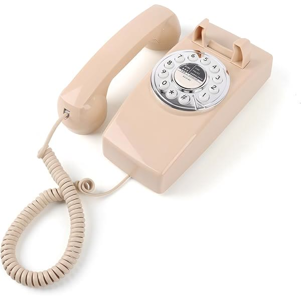
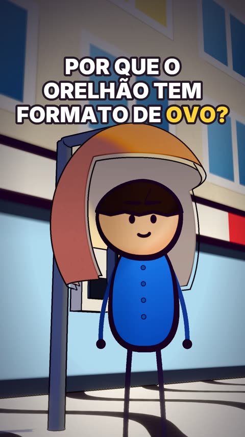

Bancada Animada
Curiosidades do dia a dia em 3D
🛒 Os achados dos vídeos
Os objetos que aparecem nas animações, com link direto pra comprar.

🔥 do vídeo novoAmazonLâmpadas solares (sem conta de luz) do vídeo: O MECÂNICO QUE ACENDEU A CASA COM UMA GARRAFAVer oferta na Amazon →
do vídeo: O MECÂNICO QUE ACENDEU A CASA COM UMA GARRAFAVer oferta na Amazon →
do vídeo: O MECÂNICO QUE ACENDEU A CASA COM UMA GARRAFAVer oferta na Amazon →Mais achados · 3

AmazonCobogó de cerâmica do vídeo: O TIJOLO CHEIO DE BURACO QUE GANHOU O NOME DOS INVENTORESVer oferta na Amazon →
do vídeo: O TIJOLO CHEIO DE BURACO QUE GANHOU O NOME DOS INVENTORESVer oferta na Amazon →
do vídeo: O TIJOLO CHEIO DE BURACO QUE GANHOU O NOME DOS INVENTORESVer oferta na Amazon →
AmazonTelefone fixo retrô

do vídeo: POR QUE O ORELHÃO TEM FORMATO DE OVOVer oferta na Amazon →Assista também